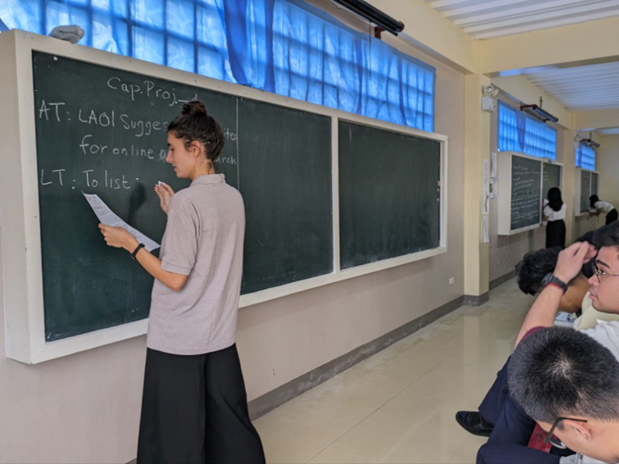
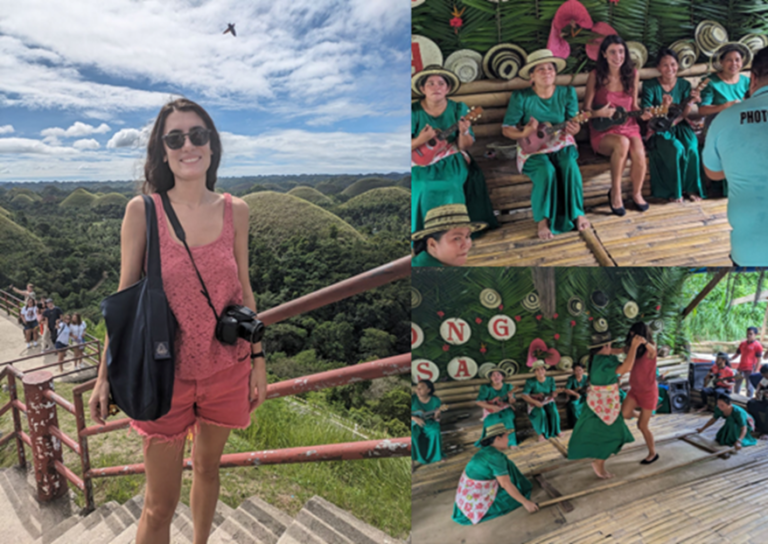

Bianca Baldassarri did her fellowship at our site at Central Visayan Institute Foundation (CVIF) in the Philippines.
Learn more about Bianca's adventures below! If Bianca's experience piques your interest in becoming a fellow yourself, apply here!
In a world brimming with innovation and discovery, the fusion of science and community has never been more vital. Recently, Science Corps had the incredible opportunity to send Bianca Baldassarri, a passionate fellow, to the Philippines, where she dedicated her time to teaching Research and Physics courses at a local site. Her journey is not just a tale of scientific endeavor; it's a heartfelt story of connection, learning, and inspiration.
Bridging Cultures Through Science and Education
Bianca's adventure began with her participation in the 10th Jagna International Workshop. Here, she engaged with a diverse group of scientists, educators, and enthusiasts, sharing her insights and learning from others. One memorable moment was when she immersed herself in the local culture by learning to wear the "malong," a versatile Philippine garment, reflecting the deep connection she formed with the local community.

Teaching Research and Physics at CVIF
At CVIF, Bianca brought her scientific expertise to the classroom, teaching both Research Methods and Physics to high school students. Her approach was to make complex scientific concepts accessible and engaging, drawing on hands-on experiments and real-world examples that resonated with students in the local context.
CVIF (Central Visayan Institute Foundation) is located in Jagna, Bohol — an island province known for its coral reefs and the iconic Chocolate Hills geological formations. The partnership between Science Corps and CVIF has enabled multiple fellows to share their scientific expertise with students who might otherwise have limited access to advanced science education.
Building Lasting Connections
Beyond the classroom, Bianca's fellowship was characterized by the genuine connections she formed with students, faculty, and community members. She participated in local events, engaged with the broader scientific community in the region, and became an ambassador for science education that transcends borders.
Her experience exemplifies the Science Corps mission: that when passionate scientists engage directly with communities, both the scientist and the community are transformed. Students gain access to mentors and scientific knowledge; fellows gain perspective, cultural understanding, and a deeper sense of their own capacity to create positive change in the world.
Inspired to Apply?
If Bianca's story has inspired you to consider a Science Corps fellowship, we'd love to hear from you. The June 2026 application cycle is now open. PhD graduates in any STEM field are encouraged to apply.